Create a New Project
The Create a New Project interface serves as the primary input layer where users define the foundational goals of their target application, platform, or business solution. Users can enter a business idea, project requirements, or technical descriptions directly into the main description text field.
Key features
Automated System Analysis
Upon submission, the platform’s analysis engine evaluates the provided text to automatically determine:
- A suitable project name.
- The most efficient project setup path.
-
Group 8, Grouped objectThe initial structure and workspace
layout.
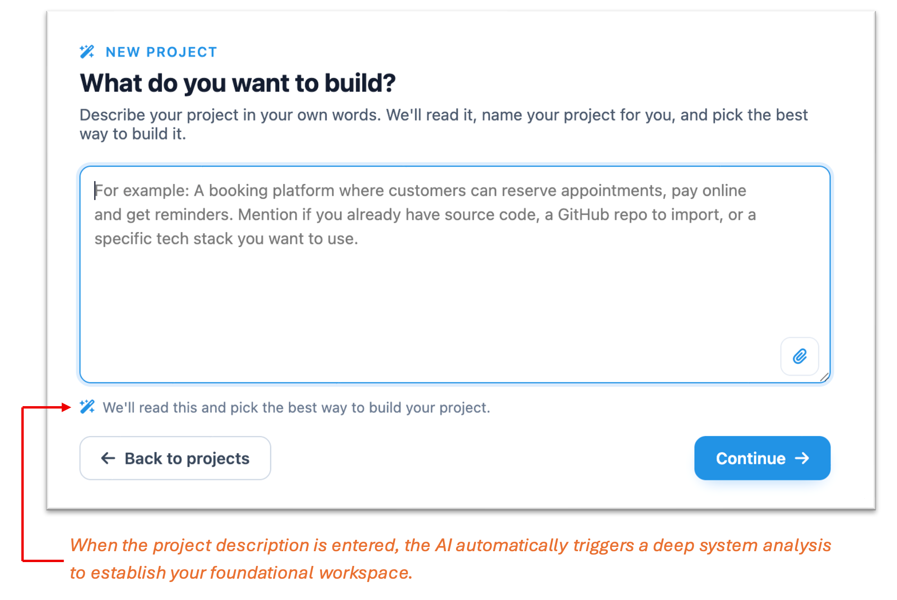
The platform's analysis engine can process diverse file types uploaded during initialization, extraction, or advanced setup configurations. Once your files are uploaded, the AI automatically handles the setup.
Integrating Existing Resources
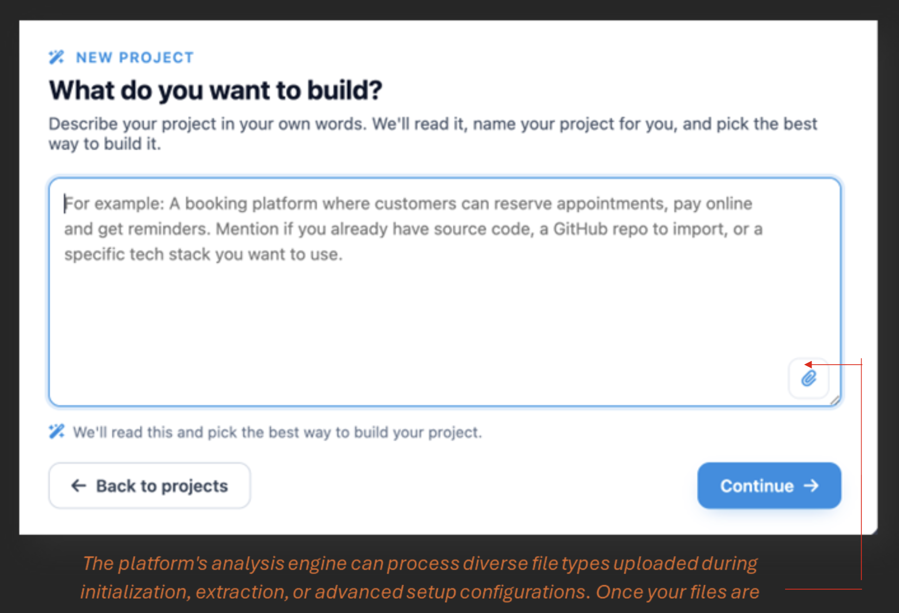
If you have pre-existing assets, you can explicitly mention them within your description. This includes specifying existing source code, active Git repositories, preferred technologies, or strict implementation requirements. The system processes these details to customize your setup and guide you through the appropriate creation workflow.
How to Create a New Project
- In the Dashboard, click on Create a New Project button
- Describe the project you want to create.
-
Click on Continue button.
/>

Project Initialization: Selecting Your Build Path

Once the system processes your initial description, it generates an AI Suggestion window to help you choose the best workflow for your project.
AI Suggestion Panel
The system evaluates your project's scope and highlights a recommendation at the top of the interface. If your project involves multiple service types, complex user roles, or extensive integrations, the system will pre-select the Architect-first approach to ensure proper upfront planning. You can easily proceed with this recommended path or manually choose an alternative option from the list below it.
Available Build Methods
Users can select from three distinct configuration paths depending on the project's complexity and current state:
Incremental Build
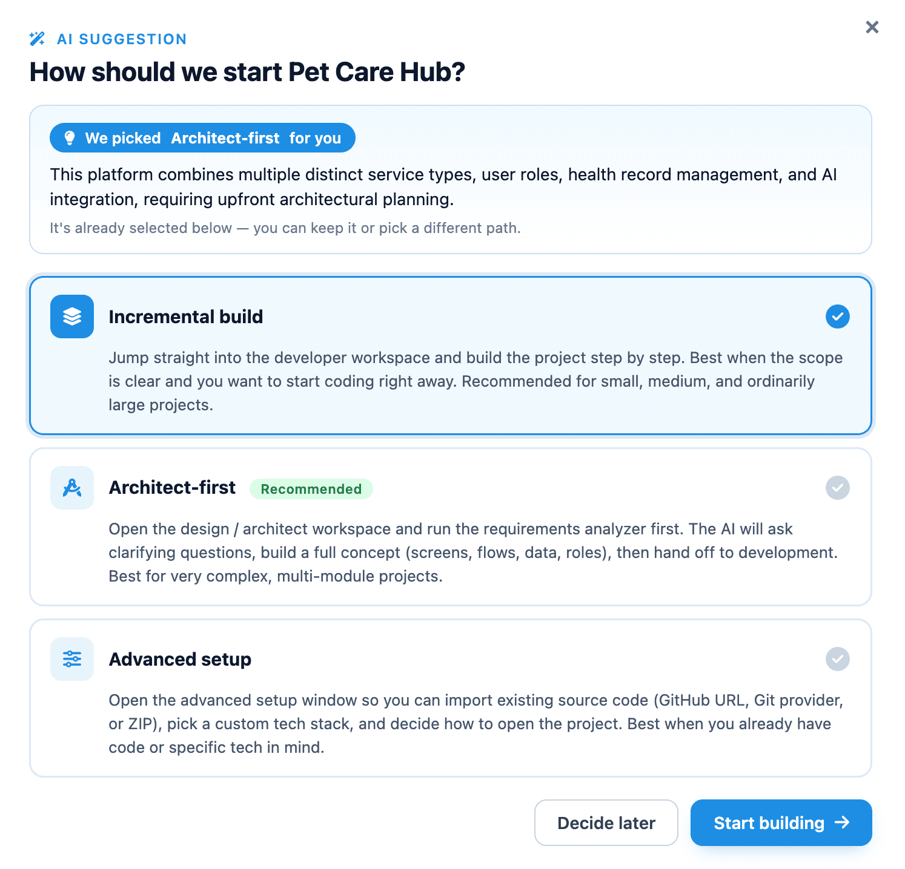
- How it works: Allows you to bypass the initial design planning phase and go straight into the main workspace to build the project step by step.
- Best for: Projects where the scope is already completely clear, or for small, medium, and standard large projects where you want to start building immediately.
How to Create Project via Incremental Build
Step 1: Select Incremental Build
Step 2: Click on Start Building button.
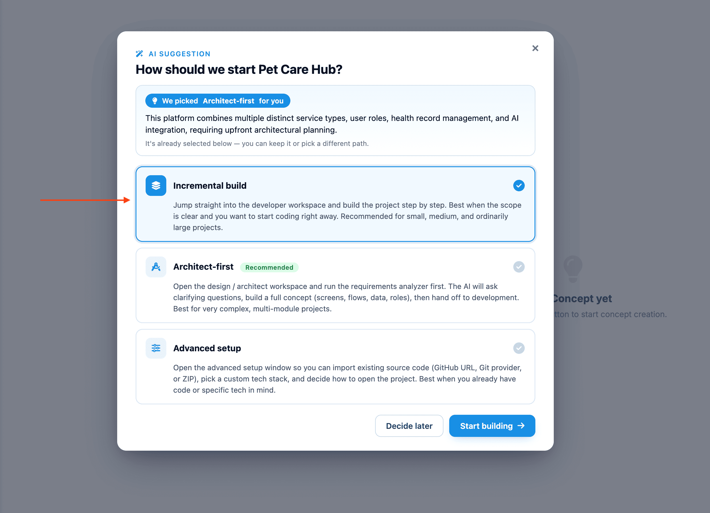
Step 3: Navigating Developer Mode
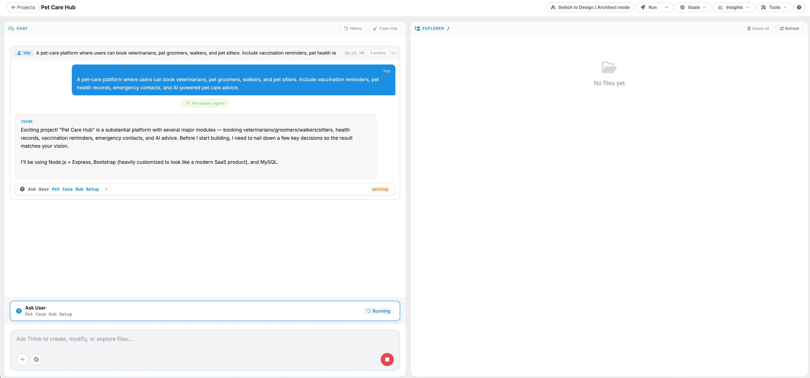
Once your project is initialized, you will enter Developer Mode. This interface is split into two primary sections to help you collaborate with the AI assistant and manage your project assets simultaneously: the Chat Panel on the left and the Explorer Panel on the right.
Architect-First (System Recommended)
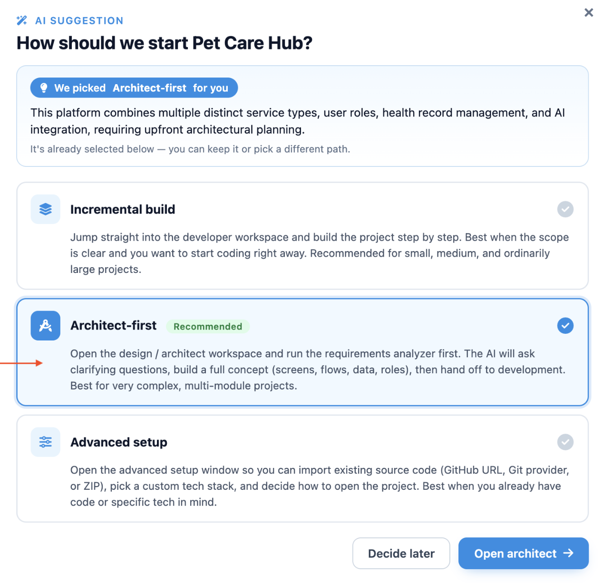
- How it works: Opens a dedicated design and architect workspace to run an automated requirements analyzer. The AI assistant will guide you through clarifying questions to map out full concepts—including screens, workflows, data structures, and user roles—before handing the finalized design off to the main project workspace.
- Best for: Highly complex, multi-module projects that require thorough initial structural layout and planning.
How to Create Project via Architect-first
Step 1: Select Architect-first option
Step 2: Click on Open Architect button.
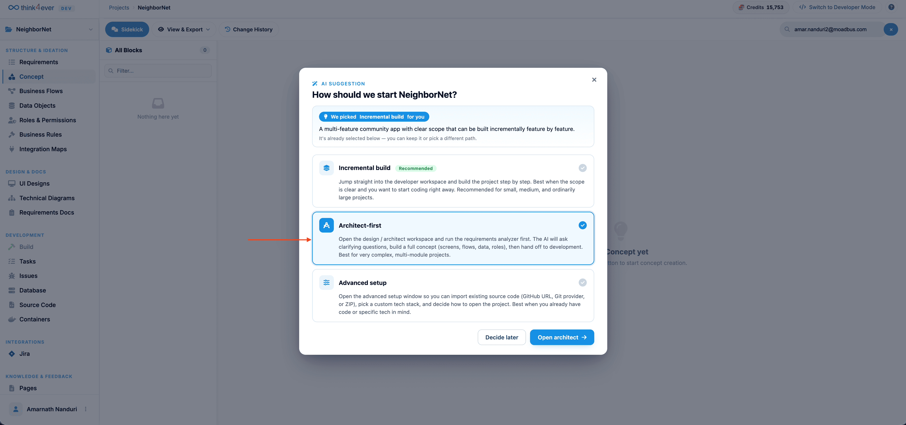
Step 3: Navigating Design / Architect Mode
If you choose the Architect-first path or switch modes using the top menu, you will enter Design / Architect Mode. This space helps you plan your project's rules, structure, and design before any actual files are created.
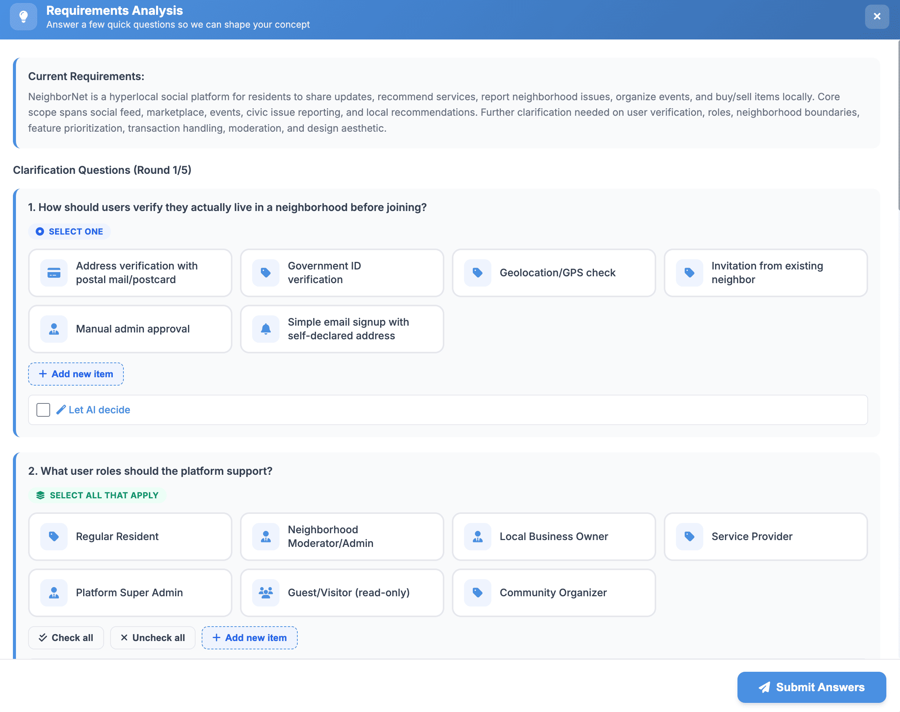
NOTE: If you do not know the answer yet, you can choose Let AI decide.
Step 4
AI will generate a couple of questions for Requirements Analysis. Provide the answers for Clarification questions then click Submit Answers button. AI will analyze the submitted answers to requirements questionnaire
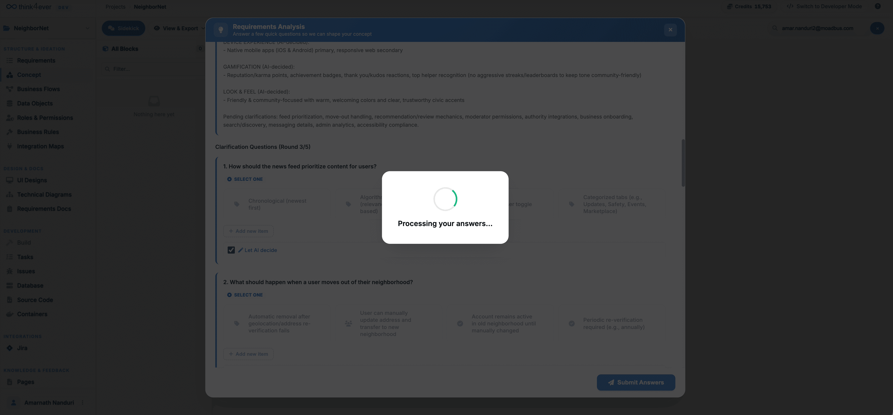
Step 5
A summary of defined requirements will be generated for your review and approval.
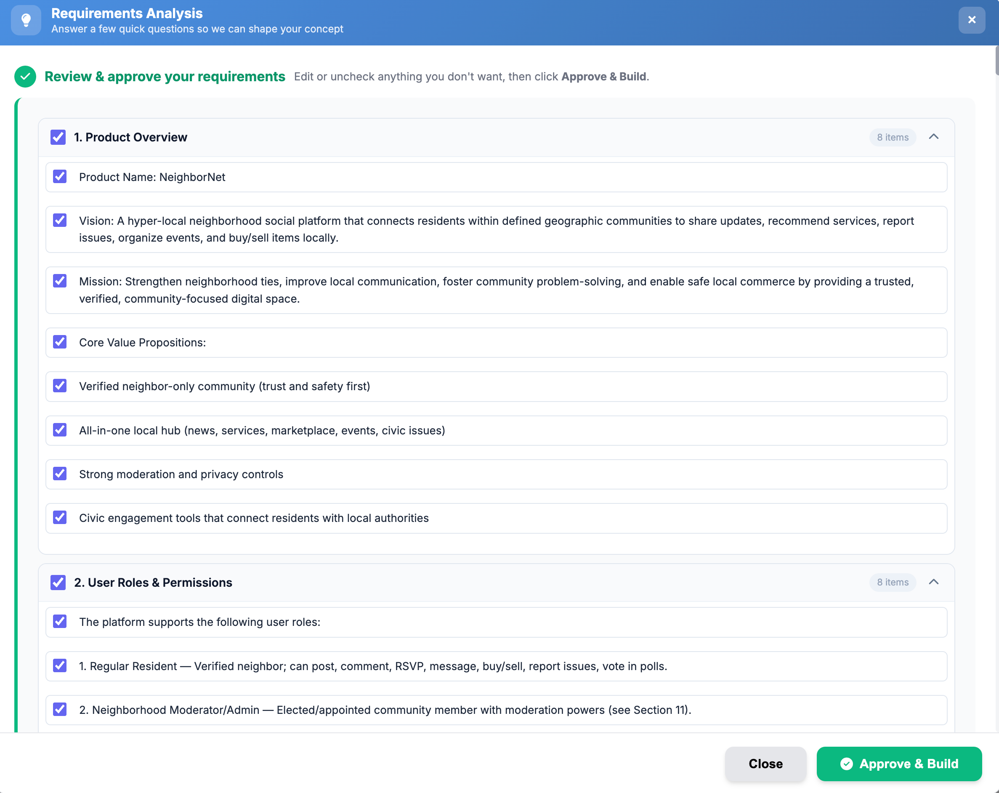
Step 6
Once all good, click on Approve & Build button. The system will analyze the consolidated requirements and start generating your app concept.
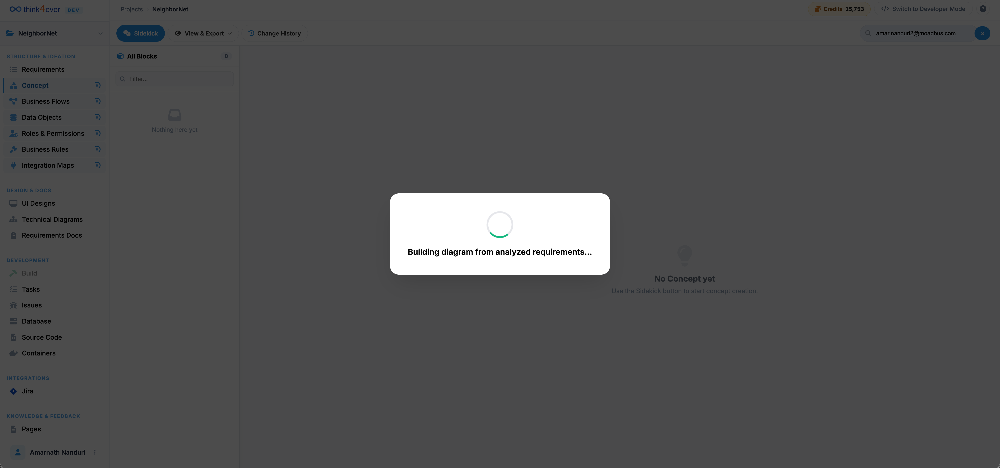
IMPORTANT: Analysis process may take 15 minutes or more depending on the complexity of your project.
Once the project has been initially created, you will be taken to Designer/Architect mode of your project where you can customize and modify the project created.
Advanced Setup
- How it works: Opens an advanced configuration window allowing you to import existing projects via a GitHub URL, Git provider, or a standard ZIP file. It also lets you select a custom technology stack and specify exactly how the project should open.
- Best for: Migrating existing systems or starting projects where you already have a definitive codebase or specific software preferences in mind.
How to Create Project via Advanced Setup
Step 1: Select Advanced Setup option
Step 2: Click on Open Advanced Setup button.
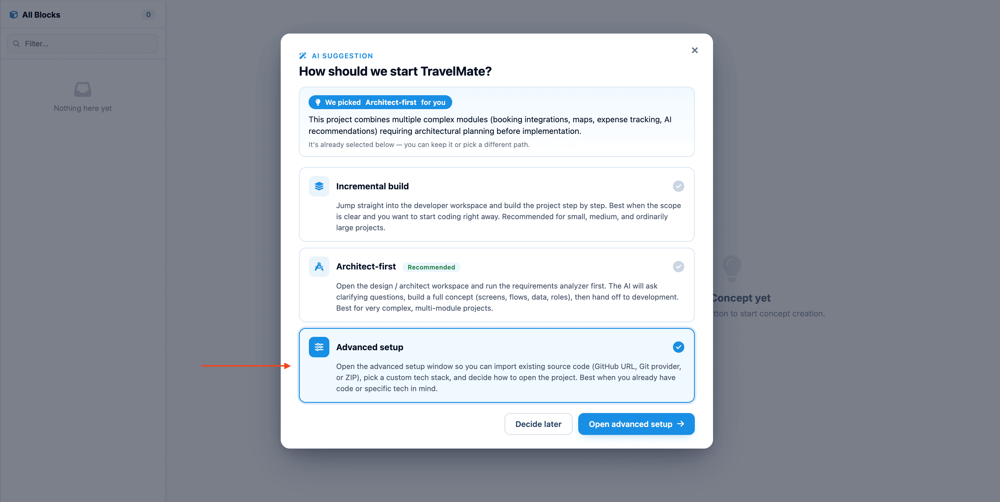
Step 3: Advanced Setup: Configuring and Opening Your Project
The Advanced Setup configuration window (shown in image_c1e5a0.jpg) allows you to customize exactly how your project is built and what technology it uses before you launch your workspace.
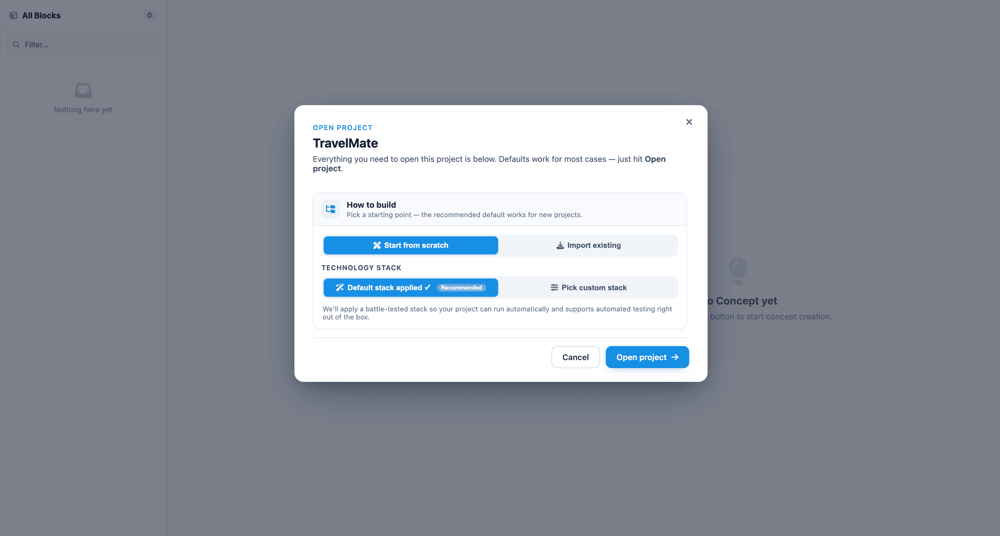
From this window, you can choose whether to start fresh or bring in old code, and decide between a pre-packaged or custom technology setup.
Start from Scratch vs Import an Existing Project
Start from Scratch
Icon: Magic wand / drafting pen.
Description: Select this option to initialize your project with a completely blank workspace. It is ideal when you want to design a brand-new architecture and allow the AI agents to build out system components from a completely fresh canvas.
Import an Existing Project
Icon: Download / inbox arrow.
Description: Select this option to bring an established codebase into the workspace. The system allows you to import source code directly from version control, link a public GitHub repository, or upload a local ZIP archive containing your existing project files.
Start from Scratch
Option 1 - Default Stack Applied
Step 1: Select "Start from scratch"
Under the How to build section, ensure the Start from scratch button is selected. This tells the system to create a brand-new workspace completely free of legacy code or old configurations.
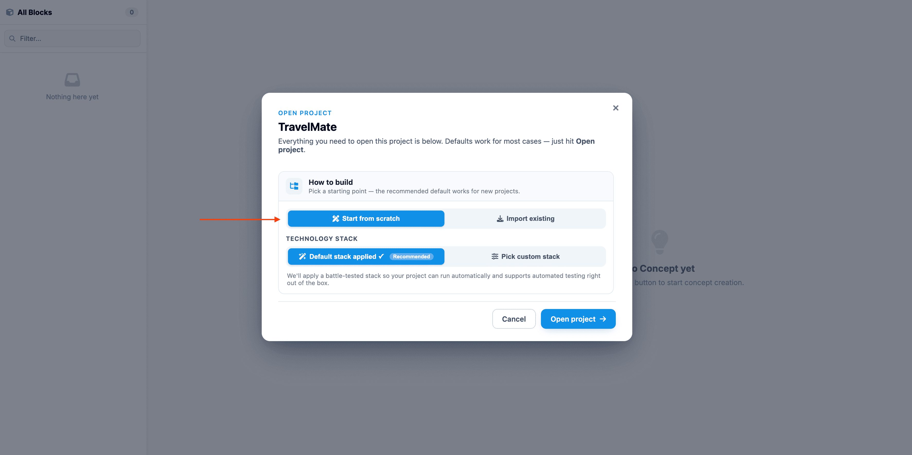
Step 2: Ensure "Default stack applied" is Active
Look at the Technology Stack section (highlighted in red in image_c18a8e.jpg). Make sure Default stack applied ✓ (Recommended) is toggled.
- By choosing the default stack, the AI automatically configures a highly stable, pre-tested combination of coding tools and database structures.
- This setup ensures your project runs smoothly and includes built-in automated testing features right out of the box.
Step 3: Launch the Project
Once both defaults are confirmed, finalize the setup by using the action buttons at the bottom of the window:
- Click the blue Open project button to save your choices and immediately load into your new workspace.
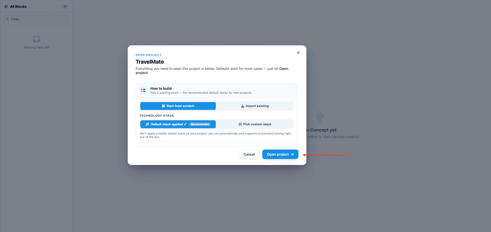
Option 2 - Pick Custom Stack
Allows users to manually choose preferred technologies and frameworks. How to Create a project:
-
Click Pick Custom Stack
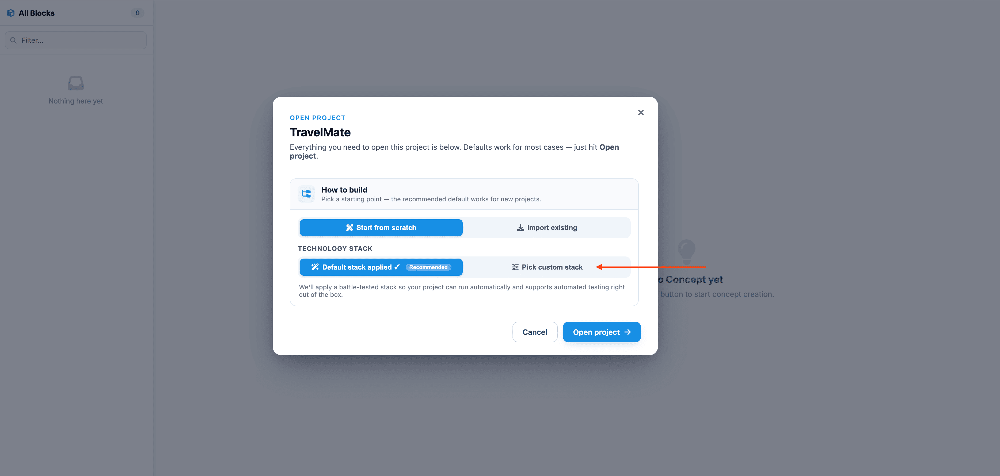
-
Select the desired technologies
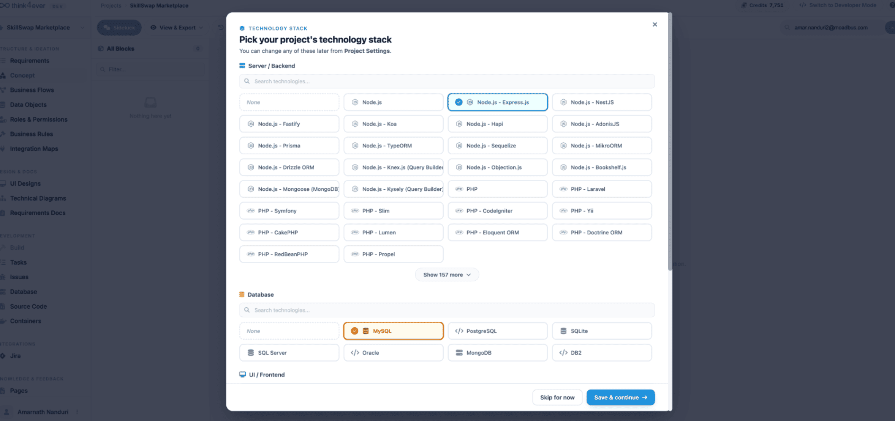
- Save the selected configuration
Recommended For
- Custom project requirements
- Advanced configurations
- Specific framework preferences
Types of Stack
A dialog box is launched with Technology stack options to be applied on the project to be created. This is divided into 3 sections: (1) Backend, (2) Database and (3) UI/Frontend
Server/Backend
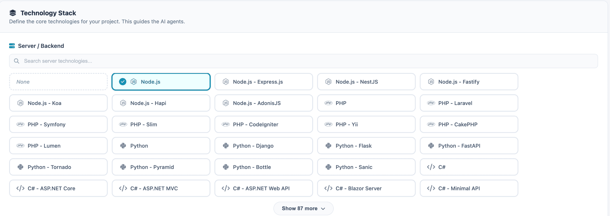
Select the primary language and framework that will power your application logic. The system supports a wide array of environments, including:
- JavaScript/TypeScript:
- Python: Django, Flask, FastAPI, Tornado, Pyramid, Bottle, Sanic.
- PHP:Laravel, Symfony, Slim, CodeIgniter, Yii, CakePHP, Lumen.
- C#:ASP.NET Core, ASP.NET MVC, Web API, Blazor, Minimal API.
Database
Identify the data persistence layer for your project. This selection informs how Data Objects and Database Schemas are visualized and scripted (e.g., SQL-based relational models vs. NoSQL document structures).
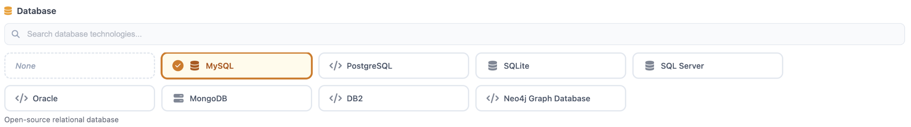
UI / Frontend Configuration
The UI/Frontend section is dedicated to defining the "Client Side" of your application. This configuration ensures that the AI-generated user interfaces, component libraries, and frontend logic are consistent with modern web or mobile standards.
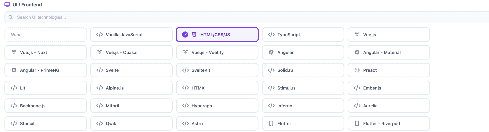
Implementation Best Practices
To ensure the highest accuracy in your project outputs, follow these guidelines:
- Precision Matters: Selecting a specific framework (like Node.js - NestJS) rather than a generic runtime (like Node.js) allows the system to generate more precise boilerplate code and folder structures.
- Save Changes: Always click the Save Changes button in the top-right corner before navigating to other sections like API Keys or Business Flows to avoid losing your configuration.
- Iterative Updates: You can return to this section at any time to update your stack if your project requirements pivot during the ideation phase.
Import Existing
Advanced Setup: Importing an Existing Project
This option allows you to open a project by connecting and importing an existing codebase. Instead of starting fresh, this path lets you pull in external files directly into the platform workspace.
Step-by-Step Import Guide
Follow these steps to link your existing code and open the project:
Step 1: Select "Import existing
Under the How to build section, click the Import existing button. Selecting this option closes the standard default settings and opens the repository integration fields.
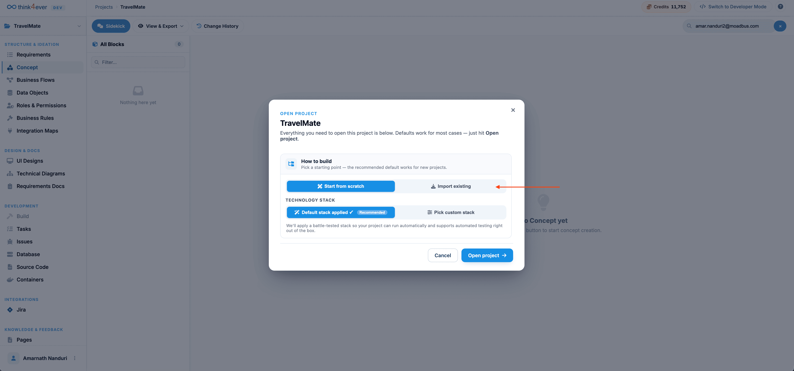
Step 2: Choose Your Source Code Location
Under the WHERE IS YOUR CODE? section, select how you want to deliver your files to the system:
- Public GitHub URL: Select this option to connect a public GitHub repository.
- ZIP file: Select this option if you want to upload a local, compressed folder containing your code.
- Git provider (advanced): Select this option if you need to connect using alternative Git version-control providers or custom credentials.
Step 3: Finalize and Open
Once your repository data is entered, complete the integration using the buttons at the bottom right:
- Cancel: Closes the setup window and ignores any data entered.
- Open project: Click this blue button to save your setup. The system will automatically download a snapshot of the repository directly into your project workspace folder and open it for use.
Option 1 - Public GitHub URL
Importing Source Code via Public GitHub URL
When you choose to seed an empty workspace using an existing project repository, the platform provides a dedicated wizard to pull code seamlessly from open-source version control.
This option imports source code from a publicly accessible GitHub repository.
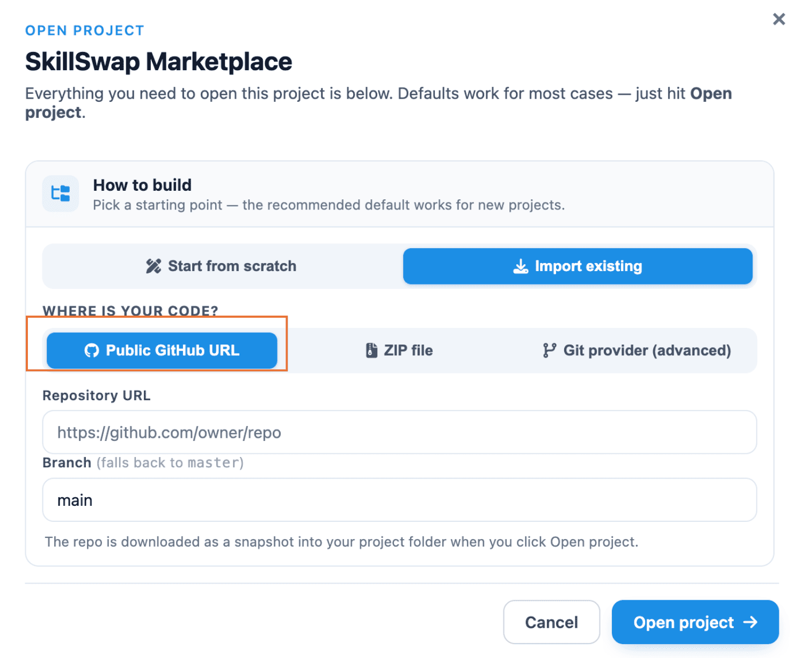
User Requirement
The user must provide a valid public GitHub repository URL
Parameter Configurations & Rules
- Repository URL: Paste the complete, publicly accessible HTTP link to your target repository (e.g., https://github.com/expressjs/express). Private repositories requiring SSH key encryption or explicit developer tokens are not supported by this basic link wizard.
- Branch Specification: Define the explicit branch string you want to target (e.g., main or development). If you leave this field empty, or if the specified branch cannot be found in the repository index, the system automatically falls back to pulling from the default master branch.
How to Execute the Repository Sync
- Enter your specific repository location and target branch into the modal text blocks.
- Click the white ← Back button to return to the source selection menu if you need to choose an alternative upload path (like a local ZIP archive).
- Click the solid purple Open Project button to Import repository action button to start the automated transfer.
- The platform will automatically connect to GitHub, download a snapshot of the codebase, extract the file structure, and initialize the project components directly within your working developer canvas.
Option 2 - ZIP File
Importing Source Code via ZIP Archive
When setting up a project workspace from an existing codebase, the platform provides a local file upload wizard as an alternative to external version control tracking.
This option allows you to upload a compressed archive directly from your local computer. The system will automatically unpack and map the contained directories into your designated project folder.
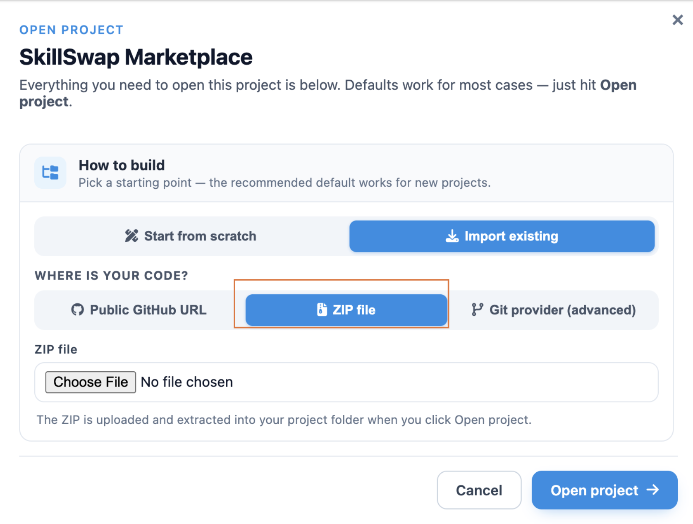
Features:
- Upload local project archives
- Extract application files automatically
- Import existing codebases into the workspace
ZIP files containing
- Source code
- Assets
- Configuration files
- Project folders
Core Functions
- Upload Local Project Archives:Browse your local directories to select and transmit bundled application code structures.
- Extract Application Files Automatically:The backend system instantly runs an unzipping routine upon completing the upload, parsing your file trees without requiring manual terminal extraction commands.
- Import Existing Codebases into the Workspace:Populates your empty developer environment with your historical logic blocks, configuration settings, and static assets in one step.
Step-by-Step Upload Procedure
- Click the Choose File target button within the configuration modal to trigger your operating system's native file explorer.
- Locate and select the targeted .zip archive containing your application files.
- Verify that the correct archive filename appears next to the selection button.
- If you need to switch to an alternative seed method (such as pulling from a public GitHub URL), switch between the tabs
- Click the solid purple 📤 Upload & extract action button to initiate the transfer process.
- Keep your browser window open while the file is processed; once complete, your unpacked folder architecture will populate directly into the left side of your developer canvas.
Option 3 – Git Provider (advanced)
The Git Provider (Advanced) option allows users to connect the project directly to a remote Version Control System (VCS) repository such as GitHub, GitLab, or Bitbucket using authenticated credentials.
This option is recommended for projects that are actively maintained in a source control repository and require secure access.
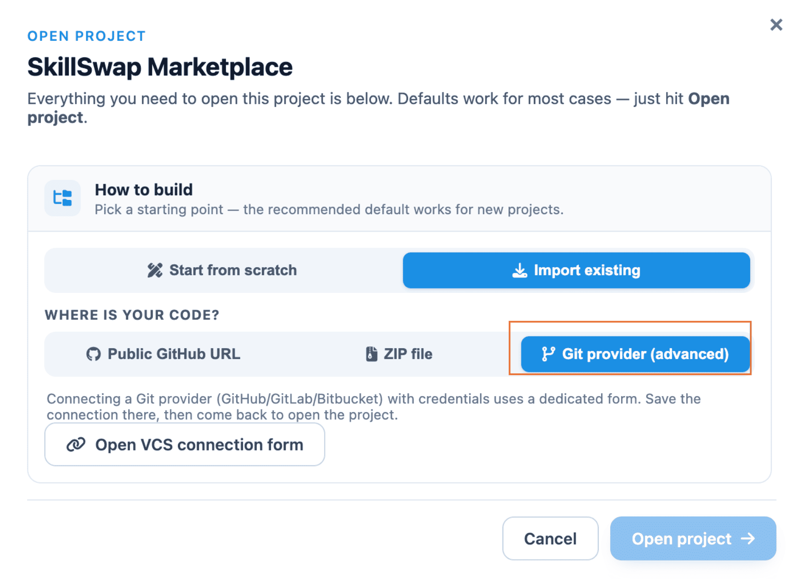
What is a VCS?
VCS stands for Version Control System.
A Version Control System is a tool used to:
- Store and manage source code
- Track file and code changes over time
- Support collaboration between multiple developers
- Maintain version history and backups
- Restore previous versions when needed
ZIP files containing
- Source code
- Assets
- Configuration files
- Project folders
Common VCS platforms include:
- GitHub
- GitLab
- Bitbucket
How to Connect Project using VCS:
- Select Connect my version control.
- Authenticate with the repository provider.
- Select the repository to import.
- Confirm synchronization settings by clicking on Save Integrations.
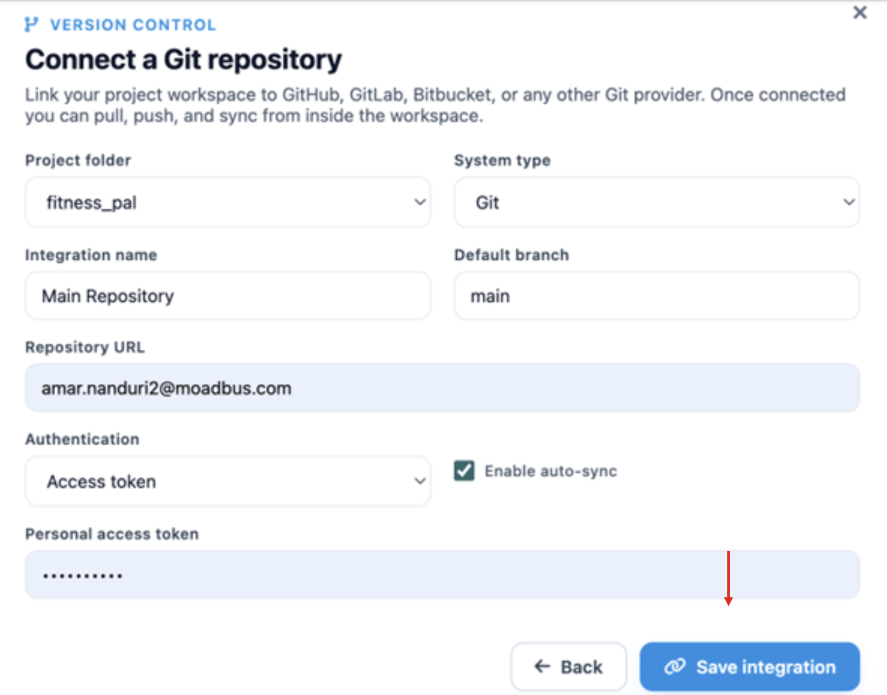
Step-by-Step Setup Guide on how to import existing project
Follow these steps to configure your project parameters before launch:
Step 1: Choose How to Build
Under the How to build section, select your project's starting point:
- Start from scratch: Select this option if you want to build a completely brand-new project with a clean workspace.
- Import existing: Select this option if you want to bring in a pre-existing codebase, local files, or repository data to continue working on an old project.
Step 2: Choose Your Technology Stack
Under the Technology Stack section, define the programming tools and frameworks for your environment:
- Default stack applied (Recommended): Click this button to let the platform automatically apply a standard, pre-tested technology stack. This setup runs automatically and includes built-in support for automated testing. workspace.
- Pick custom stack: Click this button if you have specific coding languages, databases, or software frameworks in mind and want to select them manually.
Step 3: Launch Your Workspace
Once you have made your selections, look to the bottom right of the pop-up window to finalize your choice:
- Cancel: Click this button to exit the setup window and discard any changes you made.
- Open project:Click this blue action button to save your configurations and immediately load your customized workspace.
Project Initialization: Selecting Your Build Path
When creating a new project, the platform analyzes your initial project details and provides an AI Suggestion window (as shown in image_c35566.jpg) to help you choose the most efficient development workflow.
AI Suggestion Panel
The system evaluates your project's scope and highlights a smart recommendation at the top of the interface. For example, if your project involves multiple service types, complex user roles, or extensive integrations, the AI will pre-select the Architect-first approach to ensure proper upfront planning. You can proceed with this recommended path or manually select an alternative option below it.
Available Build Methods
You can choose from three distinct setup methods depending on your project's complexity and current development state:
-
Incremental build
- What it does: Allows you to bypass the initial architecture planning phase and jump straight into the developer workspace to build the project step by step.
- Best for: Projects where the scope is already explicitly clear, or for small, medium, and standard large projects where you want to start coding immediately.
-
Architect-first (Recommended)
- What it does: Opens the dedicated design and architect workspace to run a comprehensive requirements analyzer. The AI assistant will guide you through clarifying questions to map out full concepts—including screens, workflows, data models, and user roles—before seamlessly handing the project off to the development phase.
- Best for: Highly complex, multi-module platforms that require rigorous initial technical layout and structural design.
-
Advanced setup
- What it does: Opens an advanced configuration window where you can import existing source code via a GitHub URL, Git provider, or a standard ZIP file. It also allows you to configure a custom tech stack and specify project opening parameters.
- Best for: Migrating existing applications or projects where you already have a definitive codebase and specific technology stack in mind.
Action Buttons
At the bottom right of the screen interface (visible in image_c35566.jpg), you can complete this step using the following controls:
- Decide later: Postpones the workflow selection and exits the initialization wizard.
- Open architect / Continue: Confirms your highlighted selection (e.g., Open architect when the Architect-first path is selected) and transitions you directly into the chosen workspace interface.